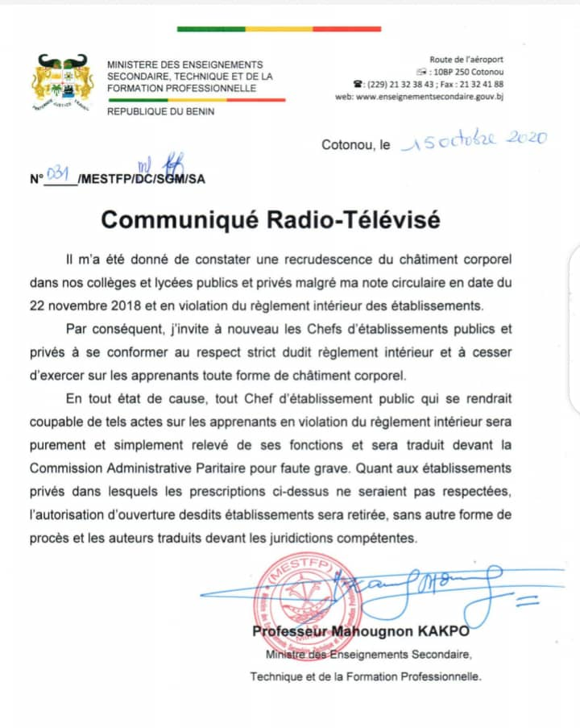

Toutes les sociétés du monde ont connu les châtiments corporels infligés aux enfants dans le domaine de l’éducation. Les sociétés Africaines, ne sont pas en reste.Les châtiments corporels se définissent comme « le recours à la force physique par une personne en position d’autorité sur une personne dont elle a la responsabilité avec l’intention de provoquer un certain degré de douleur ou de malaise aussi léger soit- il. Le comité des Droits de l’enfant y ajoute , certaines formes non physiques comme « les châtiments tendant à rabaisser, humilier, dénigrer, prendre pour bouc émissaire, menacer, effrayer ou ridiculiser l’enfant » qui sont également cruelles et dégradantes et donc incompatibles avec la Convention. En définitive, les châtiments corporels peuvent avoir des effets aussi bien physiques que psychologues.
L’usage des châtiments corporels à l’école est répandu dans le monde, les statistiques le prouvent largement.Cette image illustre bien cette pratique.
Lorsque les enfants ne se conforment pas aux normes, ou font des erreurs, la violence est alors perçue comme un moyen légitime de corriger les comportements non conformes ou de les amener à comprendre.
En effet parents et éducateurs parlent souvent de la vertu éducative des châtiments corporels. Et les enquêtes au Sénégal, Bénin, Togo révèlent que la violence physique fait partie de l’éducation et est nécessaire « afin que l’enfant puisse comprendre ses erreurs, interpréter les valeurs sociales et morales et apprendre à respecter ses aînés ».
Ainsi, l’impact censé être bénéfique pour le comportement de l’enfant est fréquemment utilisé pour défendre les châtiments corporels. L’absence de formation des enseignants aux techniques disciplinaires alternatives non violentes, conduit souvent à l’utilisation de méthodes basées sur la punition et la violence physique.-Le Comité des droits de l’enfant a produit, en 2006, une Observation générale no 8 . « Le droit de l’enfant à une protection contre les châtiments corporels et les autres formes cruelles ou dégradantes de châtiments (art. 19, 28 (par. 2) et 37, entre autres) ». Cette observation a pour but de mettre en lumière l’obligation incombant à tous les États parties à la Convention de prendre rapidement des dispositions aux fins d’interdire et d’éliminer tous les châtiments corporels et les autres formes cruelles ou dégradantes de châtiments à l’égard des enfants et d’exposer les mesures législatives, les autres mesures de sensibilisation et les mesures éducatives qu’il appartient aux États de prendre.
Les conséquences des châtiments corporels
.jpg) La maltraitance, et les autres formes de violence peuvent avoir des conséquences graves sur la santé de l’enfant et sa personnalité ; en particulier, ils peuvent compromettre le développement physique, psychologique ou affectif de l’enfant. A long terme, ils renforcent le développement de comportements violents chez l’enfant.-Stratégie pour une éducation sans violence.
La maltraitance, et les autres formes de violence peuvent avoir des conséquences graves sur la santé de l’enfant et sa personnalité ; en particulier, ils peuvent compromettre le développement physique, psychologique ou affectif de l’enfant. A long terme, ils renforcent le développement de comportements violents chez l’enfant.-Stratégie pour une éducation sans violence.
Il faudrait donc renverser la tendance et mettre en place une éducation sans violence à la maison comme à l’école, d’autant que les deux structures sont liées. L’enseignement non coercitif et l’apprentissage sans peur trouvent leur justification dans la convention des droits de l’enfant et la charte Africaine des droits et du bien être de l’enfant.
Il faut pour cela agir à deux niveaux. Au niveau Etatique et familial; Harmoniser la législation nationale avec les textes internationaux relatifs aux droits de l’enfant ratifiés par le pays avec une Interdiction explicite des châtiments corporels et autres châtiments cruels ou dégradant dans la législation s’appliquant aux différents cadres de la vie des enfants ,Ouvrir des poursuites contre les auteurs ;Education du grand public, des professionnels concernant le changement des lois d’autant qu’aucune religion, croyance, situation économique ou méthode «éducative» ne saurait justifier les châtiments corporels ou toute autre pratique portant atteinte à la dignité de l’enfant .Recruter plus d’enseignants qualifiés et investir dans la formation d’enseignants à une éducation sans violence, aux droits de l’enfant pour une alternative aux châtiments corporels. Mettre en place un code de déontologie pour la protection des enfants à l’école et dans les centres d’éducation.
 -Sensibiliser les parents, les éducateurs sur, les raisons d’abandonner les châtiments corporels : comportements agressifs, incapacité de résoudre les conflits de façon pacifique, la peur des parents ou la rébellion, insensibilité, difficultés sexuelles, anxiété, dépression, chute des performances scolaires.